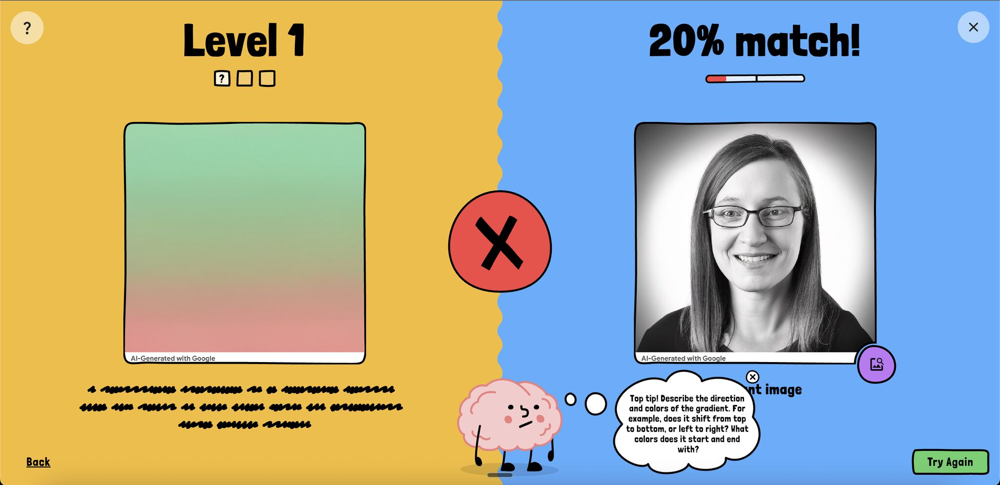

משחק חמוד שפיתחו בגוגל מלמד אתכם איך לכתוב פרומפטים נכון כדי ליצור תמונות עם בינה מלאכותית
פורסם במקור ב LinkedIn
משחק חמוד שפיתחו בגוגל מלמד אתכם איך לכתוב פרומפטים נכון כדי ליצור תמונות עם בינה מלאכותית
גוגל השיקה משחק רשת קטן ולכאורה תמים, שמלמד איך לכתוב פרומפטים טובים יותר.
המכניקה פשוטה - מוצגת תמונה וצריך לתאר במילים את מה שרואים. אחר כך נחשפת המטרה האמיתית של המשחק, ומערכת הבינה המלאכותית בודקת עד כמה הצלחת להתקרב.
ככל שמתקדמים, המשימות נעשות עדינות יותר. לומדים לשים לב לדקויות. פתאום מגלים שצורת הפנייה, סדר המילים, אפילו שם התואר שבחרת, משנים הכול.
שיחקתי בזה חמש דקות, וזה הספיק כדי להבין איך שיפור קטן בפרומפט משנה את כל התוצאה.
המשחק לא נראה כמו כלי הדרכה. אבל הוא כלי למידה מצוין בתחפושת של משחק תמים.
רוצים לנסות? בבקשה:
https://lnkd.in/dWYFCu9X
